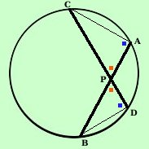
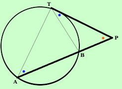

|
I tre teoremi precedenti in pratica sono lo stesso teorema:   Infatti considera il
teorema delle corde,
e pensa alle corde come a degli
elastici e immagina di tirare il punto P fuori della circonferenza finche' i
segmenti non siano allineati:
Infatti considera il
teorema delle corde,
e pensa alle corde come a degli
elastici e immagina di tirare il punto P fuori della circonferenza finche' i
segmenti non siano allineati:allora una figura si trasforma esattamente nell'altra Nota: non far caso alle lettere: le ho messe disordinate, comunque se vuoi vedere l'esempio

Ancora piu' semplice e' passare dal teorema delle secanti a quello della
secante e della tangente: basta far scivolare una delle secanti finche' non
diventa tangenteSe anche qui vuoi vedere l'esempio |

|

|

|

|